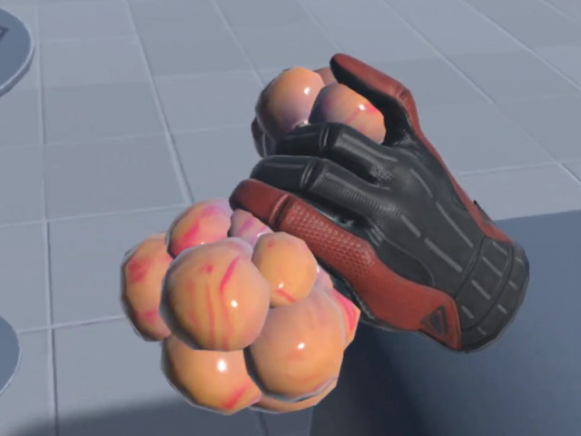
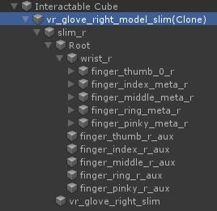
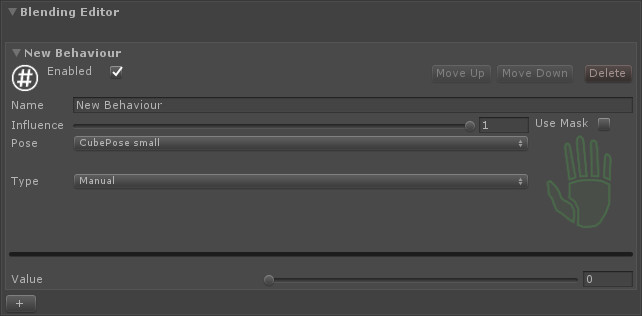
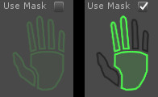
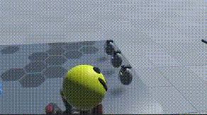
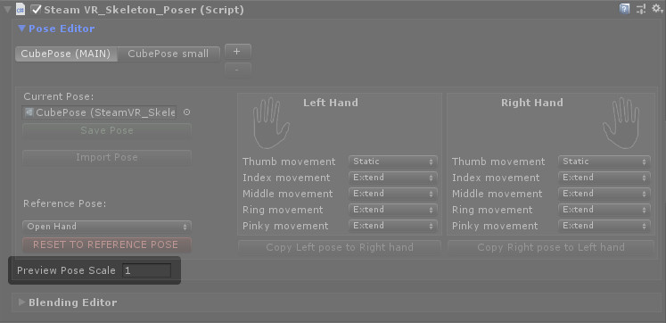

Introduction
The Skeleton Poser system has a straightforward purpose: when picking up physical objects, your in-game hands should morph to poses holding the objects. These rock solid poses can be authored and tweaked right in the Unity editor, for quick iteration as your game progresses. You can apply fancy effects on top of the poses such as additive per-finger animation and dynamic grips, and multi-pose blending.
The value of this system comes from the simplified workflow. Instead of dealing with imported animations and nightmarish animation graphs, poses are stored as compact assets and animations are applied automatically based on the pose associated with whatever you're holding. This allows more complex hand behaviour on a smaller time budget.
These are the basics of what these tools can do. What makes them superior to built in Unity animations is that, again, poses are authored right in the scene view, and complex behaviours can be stacked with the flick of a few switches.
To add hand poses to any object in your game, just add the SteamVR_Skeleton_Poser script to it. There are two sections of the Poser script, and we will be covering both in this tutorial.
Pose Editor
The pose editor is for creating and editing Poses (Steamvr_Skeleton_Pose) which can be saved as ScriptableObjects into your project and used on this object or any other in the game.
When you first add the script to a GameObject you will see an option to either select a pose from the project, or create a new one.
To preview the poses you're authoring, click the hand Icons in the Left Hand and Right Hand sections to toggle the previews on and off in the scene. These preview skeletons hold all your modifications in their transforms, so remember not to disable a hand with changes unless they have been saved with the Save Pose button.
The hands instantiated in the scene when you do this are temporary and will be destroyed when the game is run, as long as the script has kept track of them properly. It is good practice to disable both hand previews before applying to a prefab, as the skeletons are messy, large, and unnecessary in a prefab.
It's easiest to edit the poses when just one is enabled, but for some of the buttons in this tab to work you need both preview hands to be enabled. If a button is greyed out, you likely need to enable one or both skeletons to activate it.
If you want to modify the skeleton's pose, just open up the hierarchy underneath your interactable object. You can see that a vr glove skeleton has been added to it, and you can go in and edit the transforms of these bones to form your pose.
If you want to make asymmetrical poses---if you have, say an asymmetrical object---you can author a different pose for the right hand and left hand. For simple or symmetrical objects, though, you probably want the same pose for both hands, so you can copy any single-hand modifications you've made over onto the other hand with the Copy x Pose to y hand buttons. When the pose is copied, the hands are automatically mirrored across your object, and often give perfect results. Be careful with this operation, as it will permanently overwrite the other hand's pose.
It's a good idea to make backups of really important poses if you're going to be editing them, as the work can be lost easily.
To add more usable poses to an object, or to create a new pose, hit the little plus button next to the list of poses at the top. You'll see a new tab is created with no pose selected by default, and again you can either select one from the project or create a new pose. The poses added to a single SteamVR_Skeleton_Poser will be the poses available for blending later on. The order of these doesn't matter except for the first pose, labeled (MAIN), which will be the base pose.
Underneath each of the hand icons you may have noticed all the options for finger movement. This is for additive animation where you want the skeletal system's individual finger animation to apply on top of the poses that you've created. By default this will be set to static, but there are three other options.
- Static - No additive animation :,(
- Free - If you do not want your pose to apply to that finger at all, and in that case it'll listen only to the skeletal system.
- Extend - If the pose that in the hand is in will be the tightest possible grip of that finger, lifting it up when the player lifts their finger up. This will probably be the most common, as poses are mainly going to be wrapping around objects.
- Contract - The opposite of extend, where whatever pose the finger is in will be the maximum extended value of the finger, and it will only be allowed to contract further towards the fist pose. I'm not sure when that one would be used but we added it just in case.
Blending Editor
The next tab is the blending editor. This is what you will use if you want to create more complicated behaviors, i.e. blending between multiple poses.
To start, you'll want to hit the plus button at the bottom to add a new blending behavior, called New Behaviour by default. You can enable and disable behaviors, and they have an influence slider where you can turn them off and on with more of a ramp if you don't want to harshly enable and disable them during runtime.
They have a target pose that they will be blending to which by default is the main pose. This is poor design, because since the main pose is the base, this won't do anything. Instead, you'll want to set this to one of the secondary poses you've added on the pose editor list.
There are three different types of Blending Behaviours.
Manual - What you would use if you want this blending to be controlled by a script or just set in the inspector right here with this value slider. Does nothing on its own.
 Analog - Lets you map this blending behaviour weight to one of the analog actions in your project. Smoothing speed lets you apply a little bit of smoothing to this. Zero means no smoothing, anything above zero is going to be slow smoothing getting faster and faster as the value goes up. An appropriate value would be somewhere between 10 and 30, although you may not want any smoothing at all since this is an analog action.
Analog - Lets you map this blending behaviour weight to one of the analog actions in your project. Smoothing speed lets you apply a little bit of smoothing to this. Zero means no smoothing, anything above zero is going to be slow smoothing getting faster and faster as the value goes up. An appropriate value would be somewhere between 10 and 30, although you may not want any smoothing at all since this is an analog action.
Boolean - This is very similar to the analog action, except it can be mapped to a boolean action in your project such as a button press. In this behavior type the smoothing is probably a little bit more important, because if you don't have any smoothing it's going to be an instant jump. Again, a value between 10 and 30 is recommended.
The final option in every blending behavior is the mask. Anybody who's used Unity's humanoid animation system will find this UI very familiar, and those who haven't will find it is pretty self-explanatory. If you do not use the mask the blending behavior will be applied to the entire hand. If you do opt in for the mask, then you can select different parts of the hand to apply blending to. Green parts will have the blending behavior applied to them, and gray parts will not.

Remember, you can stack multiple blending behaviors on top of each other and they will be applied in order. Using this, you can create some really cool complicated hand behaviors.
Manual Behaviours
Analog and Boolean behaviours animate automatically, but you do have to modify manual ones through code. Luckily, this is very easy. Here's an example script that would modulate a Behaviour named "Example Behaviour" using a sine wave
using UnityEngine;
using System.Collections;
using Valve.VR;
public class PoseModulator : MonoBehaviour {
SteamVR_Skeleton_Poser poser;
private void Start()
{
poser = GetComponent<SteamVR_Skeleton_Poser>();
}
private void Update()
{
poser.SetBlendingBehaviourValue("Example Behaviour", Mathf.Sin(Time.time * 10) / 2 + 0.5f);
}
}
And the result:
Scaling
Lots of games are made at different scales for any number of reasons. What matters is that your player may be scaled up or down. The poses are applied at runtime at whatever the player scale is, which is great, but the pose authoring tools are done at a normal scale by default. This will be a problem if you're making objects that should be interactable at larger scales, as the preview you get as you work on a pose will not match the pose that you see in the game. To solve this, we added a property, Preview Pose Scale, that lets you change the working scale of the pose editor.
This value should be set to whatever your player's scale will be.
Poses saved from different Preview Scales will be indistinguishable, it is merely a helper for the editor to show what your poses will look like applied from differently scaled hands.
Conclusion
If you would like a more step-by-step guide to these features, check out the video version.
I hope this tutorial helped you get started creating your own hand poses!